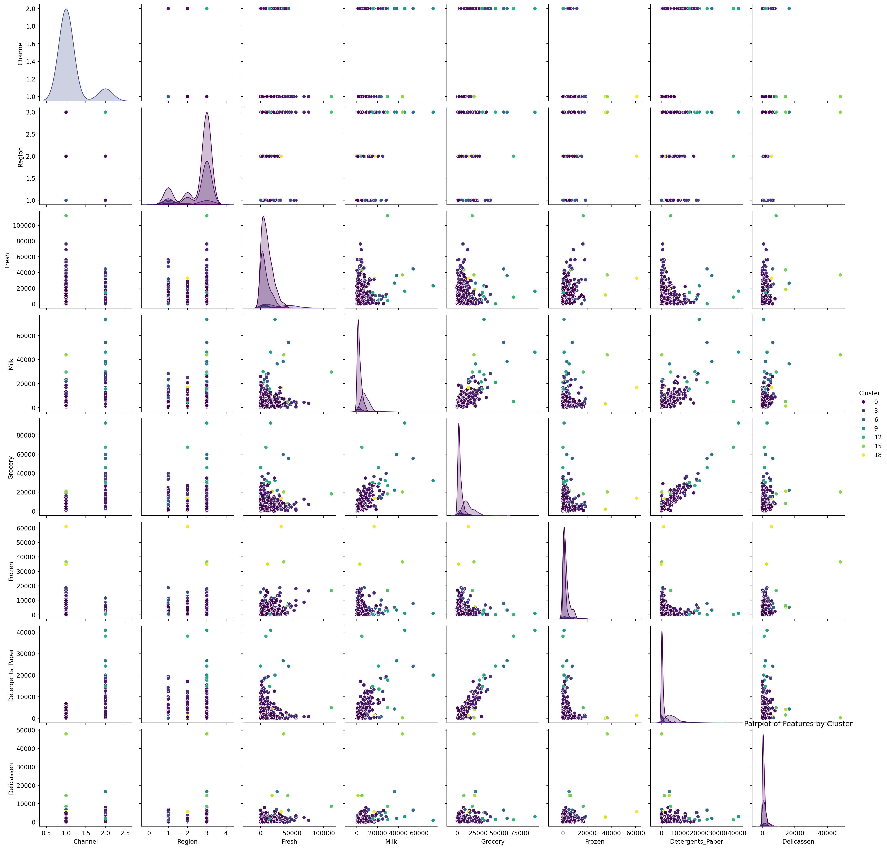
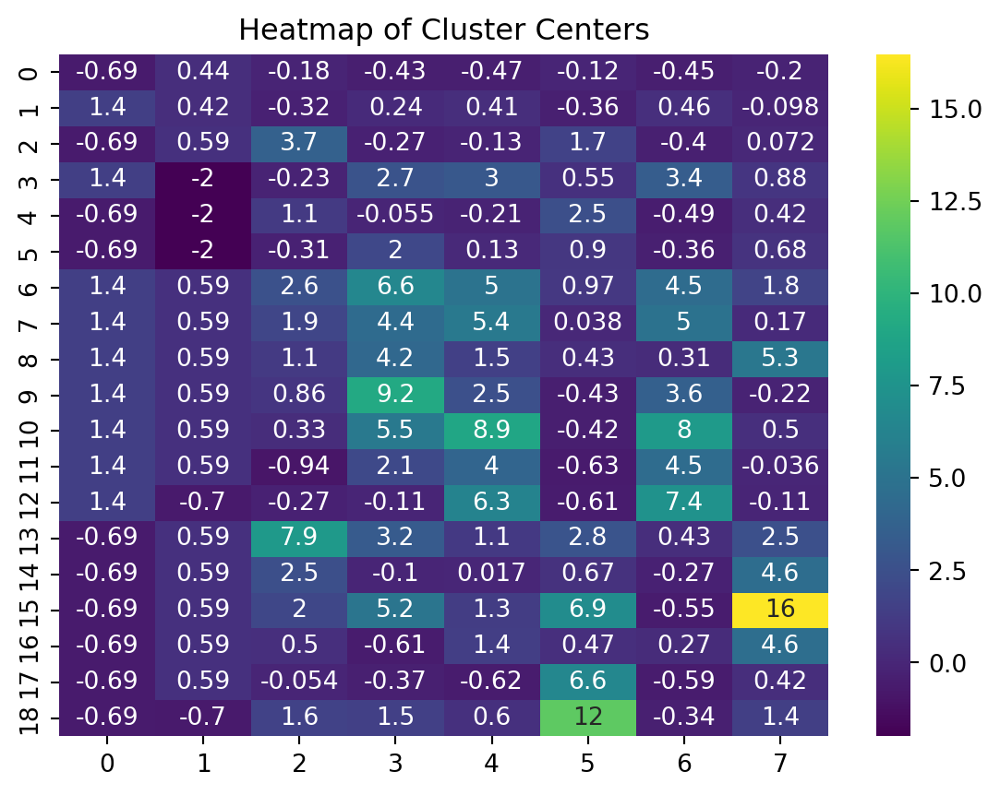
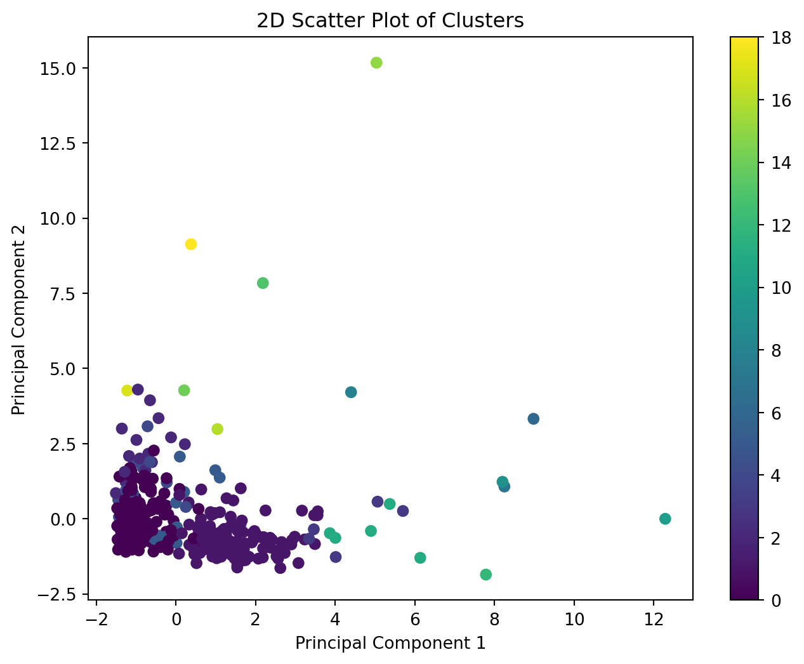
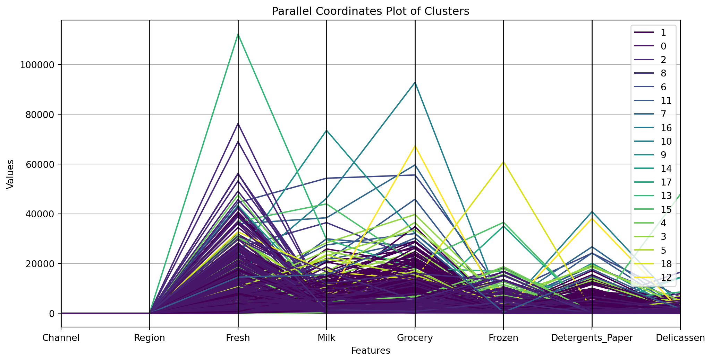

Clustering in Machine Learning is an unsupervised learning technique used to group sets of objects in such a way that objects in the same group (or cluster) are more similar to each other than to those in other groups. Its main goal is to discover inherent groupings in data. We will be using MeanShift algorithm to perform clustering. MeanShift is a clustering algorithm that is unique for its capability to automatically detect the number of clusters and its flexibility in handling clusters of different shapes and sizes.
Step 1 - Importing the Dataset
For this example, I’ll choose the “Wholesale customers data” dataset, which is also popular for clustering tasks. This dataset includes various features like Fresh, Milk, Grocery, Frozen, Detergents_Paper, and Delicatessen, representing annual spending in monetary units.
Code
import pandas as pd# Loading the dataset# Note: Ensure you have downloaded the dataset from Kaggle beforehanddataset = pd.read_csv('Wholesale customers data.csv')print(dataset.head())
from sklearn.preprocessing import StandardScaler# Optional: Dropping non-essential features, if any# dataset = dataset.drop(['Feature_to_drop'], axis=1)# Feature scalingscaler = StandardScaler()scaled_data = scaler.fit_transform(dataset)
Step 3: Applying the MeanShift Algorithm
Code
from sklearn.cluster import MeanShift# Applying MeanShift algorithmmeanshift = MeanShift(bandwidth=2)meanshift.fit(scaled_data)
MeanShift(bandwidth=2)
In a Jupyter environment, please rerun this cell to show the HTML representation or trust the notebook. On GitHub, the HTML representation is unable to render, please try loading this page with nbviewer.org.
MeanShift(bandwidth=2)
Automatic Detection of the Number of Clusters: Unlike many clustering algorithms like K-Means, MeanShift does not require the number of clusters to be specified beforehand. Instead, it automatically determines the number of clusters based on the data distribution and the bandwidth. This property is particularly useful when the number of clusters is not known a priori, or when the data might contain complex structures that aren’t well-suited to a predetermined number of clusters. In summary, MeanShift is a powerful clustering algorithm, especially useful in situations where the number of clusters is unknown or complex data structures are present. The choice of the bandwidth parameter is crucial and can significantly affect the outcome of the clustering process. Experimentation or methods like cross-validation might be required to find the optimal bandwidth for a given dataset.
Significance of Bandwidth: Role of Bandwidth: The bandwidth parameter is crucial in MeanShift and determines the size of the kernel or window that dictates which points are considered neighbors. Essentially, it sets the radius of the area within which points influence the computation of the mean.
Influence on Clusters:
Small Bandwidth: A smaller bandwidth leads to smaller kernels, considering fewer points as neighbors. This can result in detecting more clusters, with the possibility of overfitting and creating many small clusters. Large Bandwidth: A larger bandwidth includes more points in each kernel, potentially smoothing over local variations. This can result in fewer, larger clusters, but might miss finer details or subclusters in the data.
Step 4: Analyzing the Clusters:
Code
# Extracting the cluster centers and labelscluster_centers = meanshift.cluster_centers_labels = meanshift.labels_# Adding cluster information to the datasetdataset['Cluster'] = labels
Step 5: Visualizing the Clusters
Use a pairplot to visualize relationships between different features, colored by clusters. Employ a heatmap to display the cluster centers, providing insights into the average behavior of each cluster.
Code
import matplotlib.pyplot as pltimport seaborn as sns# Pairplot for different features colored by clusterssns.pairplot(dataset, hue='Cluster', palette='viridis')plt.title('Pairplot of Features by Cluster')plt.show()# Heatmap of the cluster centerssns.heatmap(cluster_centers, annot=True, cmap='viridis')plt.title('Heatmap of Cluster Centers')plt.show()


Step6: Testing accuracy:
Code
# Compute the silhouette scorefrom sklearn.metrics import silhouette_scorefrom sklearn.metrics import calinski_harabasz_scorelabels = meanshift.labels_silhouette_avg = silhouette_score(scaled_data, labels)print(f"Silhouette Score: {silhouette_avg}")# Assuming 'scaled_data' is your scaled dataset and 'labels' are the output of MeanShiftch_score = calinski_harabasz_score(scaled_data, labels)print(f"Calinski-Harabasz Index: {ch_score}")
2D Scatter Plot with PCA: This will provide a visual representation of how the data points are clustered in a two-dimensional space.
Code
import matplotlib.pyplot as pltfrom sklearn.decomposition import PCA# Reducing data to 2 dimensions using PCApca = PCA(n_components=2)reduced_data_2D = pca.fit_transform(scaled_data)# Plotting 2D scatter plotplt.figure(figsize=(8, 6))plt.scatter(reduced_data_2D[:, 0], reduced_data_2D[:, 1], c=labels, cmap='viridis', marker='o')plt.title('2D Scatter Plot of Clusters')plt.xlabel('Principal Component 1')plt.ylabel('Principal Component 2')plt.colorbar()plt.show()

Code
import pandas as pdimport matplotlib.pyplot as pltfrom pandas.plotting import parallel_coordinates# Assuming 'dataset' is your original DataFrame and 'labels' are the cluster labels from MeanShiftdata_with_clusters = dataset.copy()data_with_clusters['Cluster'] = labels# Parallel Coordinates Plotplt.figure(figsize=(12, 6))parallel_coordinates(data_with_clusters, 'Cluster', colormap='viridis')plt.title('Parallel Coordinates Plot of Clusters')plt.xlabel('Features')plt.ylabel('Values')plt.show()

Source Code
---title: "Clustering"author: "Adithya Harish"---# ClusteringClustering in Machine Learning is an unsupervised learning technique used to group sets of objects in such a way that objects in the same group (or cluster) are more similar to each other than to those in other groups. Its main goal is to discover inherent groupings in data.We will be using MeanShift algorithm to perform clustering. MeanShift is a clustering algorithm that is unique for its capability to automatically detect the number of clusters and its flexibility in handling clusters of different shapes and sizes.## Step 1 - Importing the DatasetFor this example, I'll choose the "Wholesale customers data" dataset, which is also popular for clustering tasks. This dataset includes various features like Fresh, Milk, Grocery, Frozen, Detergents_Paper, and Delicatessen, representing annual spending in monetary units.```{python}import pandas as pd# Loading the dataset# Note: Ensure you have downloaded the dataset from Kaggle beforehanddataset = pd.read_csv('Wholesale customers data.csv')print(dataset.head())```## Step 2: Data Pre-processing```{python}from sklearn.preprocessing import StandardScaler# Optional: Dropping non-essential features, if any# dataset = dataset.drop(['Feature_to_drop'], axis=1)# Feature scalingscaler = StandardScaler()scaled_data = scaler.fit_transform(dataset)```## Step 3: Applying the MeanShift Algorithm```{python}from sklearn.cluster import MeanShift# Applying MeanShift algorithmmeanshift = MeanShift(bandwidth=2)meanshift.fit(scaled_data)```**Automatic Detection of the Number of Clusters:**Unlike many clustering algorithms like K-Means, MeanShift does not require the number of clusters to be specified beforehand. Instead, it automatically determines the number of clusters based on the data distribution and the bandwidth.This property is particularly useful when the number of clusters is not known a priori, or when the data might contain complex structures that aren't well-suited to a predetermined number of clusters.In summary, MeanShift is a powerful clustering algorithm, especially useful in situations where the number of clusters is unknown or complex data structures are present. The choice of the bandwidth parameter is crucial and can significantly affect the outcome of the clustering process. Experimentation or methods like cross-validation might be required to find the optimal bandwidth for a given dataset.**Significance of Bandwidth:**Role of Bandwidth: The bandwidth parameter is crucial in MeanShift and determines the size of the kernel or window that dictates which points are considered neighbors. Essentially, it sets the radius of the area within which points influence the computation of the mean.**Influence on Clusters:****Small Bandwidth:** A smaller bandwidth leads to smaller kernels, considering fewer points as neighbors. This can result in detecting more clusters, with the possibility of overfitting and creating many small clusters.**Large Bandwidth:** A larger bandwidth includes more points in each kernel, potentially smoothing over local variations. This can result in fewer, larger clusters, but might miss finer details or subclusters in the data.## Step 4: Analyzing the Clusters:```{python}# Extracting the cluster centers and labelscluster_centers = meanshift.cluster_centers_labels = meanshift.labels_# Adding cluster information to the datasetdataset['Cluster'] = labels```## Step 5: Visualizing the ClustersUse a pairplot to visualize relationships between different features, colored by clusters. Employ a heatmap to display the cluster centers, providing insights into the average behavior of each cluster.```{python}import matplotlib.pyplot as pltimport seaborn as sns# Pairplot for different features colored by clusterssns.pairplot(dataset, hue='Cluster', palette='viridis')plt.title('Pairplot of Features by Cluster')plt.show()# Heatmap of the cluster centerssns.heatmap(cluster_centers, annot=True, cmap='viridis')plt.title('Heatmap of Cluster Centers')plt.show()```## Step 6: Testing accuracy:```{python}# Compute the silhouette scorefrom sklearn.metrics import silhouette_scorefrom sklearn.metrics import calinski_harabasz_scorelabels = meanshift.labels_silhouette_avg = silhouette_score(scaled_data, labels)print(f"Silhouette Score: {silhouette_avg}")# Assuming 'scaled_data' is your scaled dataset and 'labels' are the output of MeanShiftch_score = calinski_harabasz_score(scaled_data, labels)print(f"Calinski-Harabasz Index: {ch_score}")```**2D Scatter Plot with PCA:** This will provide a visual representation of how the data points are clustered in a two-dimensional space.```{python}import matplotlib.pyplot as pltfrom sklearn.decomposition import PCA# Reducing data to 2 dimensions using PCApca = PCA(n_components=2)reduced_data_2D = pca.fit_transform(scaled_data)# Plotting 2D scatter plotplt.figure(figsize=(8, 6))plt.scatter(reduced_data_2D[:, 0], reduced_data_2D[:, 1], c=labels, cmap='viridis', marker='o')plt.title('2D Scatter Plot of Clusters')plt.xlabel('Principal Component 1')plt.ylabel('Principal Component 2')plt.colorbar()plt.show()``````{python}import pandas as pdimport matplotlib.pyplot as pltfrom pandas.plotting import parallel_coordinates# Assuming 'dataset' is your original DataFrame and 'labels' are the cluster labels from MeanShiftdata_with_clusters = dataset.copy()data_with_clusters['Cluster'] = labels# Parallel Coordinates Plotplt.figure(figsize=(12, 6))parallel_coordinates(data_with_clusters, 'Cluster', colormap='viridis')plt.title('Parallel Coordinates Plot of Clusters')plt.xlabel('Features')plt.ylabel('Values')plt.show()```